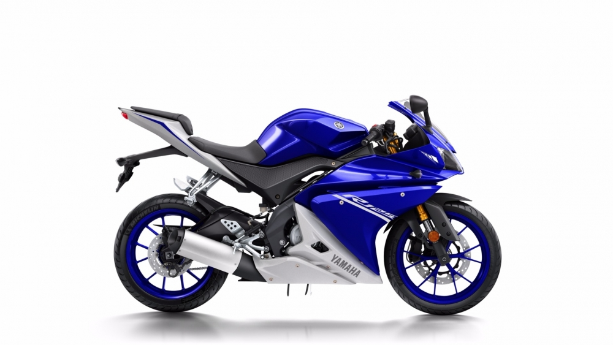
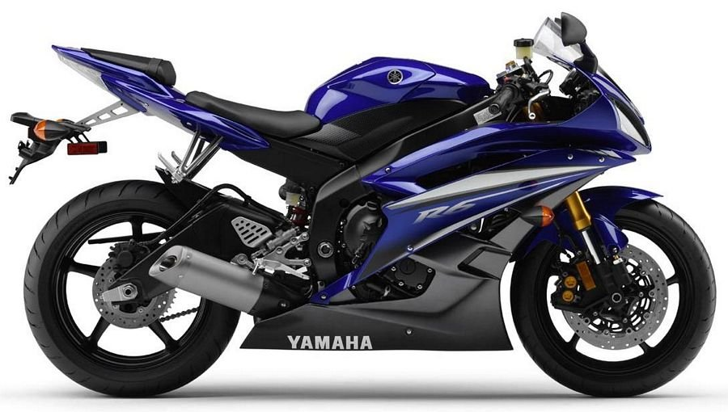
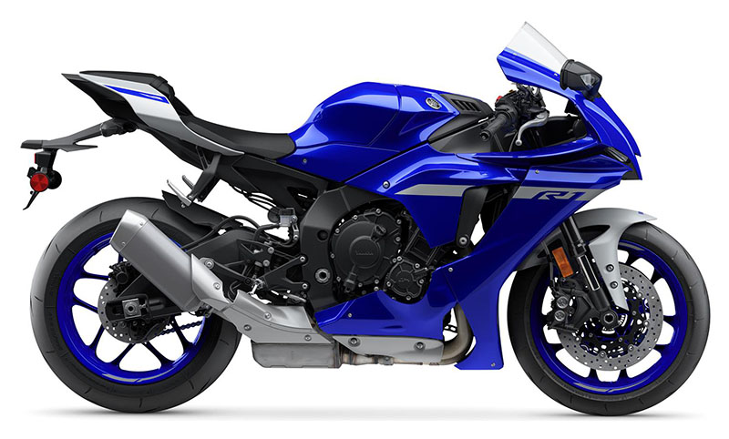

Yamaha R125
- Silindir Hacmi 124.7 cc.
- Silindir Adedi 1.
- Subap Adedi 4.
- Beygir Gücü (bg) 15.0.
- Azami Tork 12.4 nm.
- Azami Devir 9000 d/d.

Yamaha R6
- Silindir Hacmi 599 cc.
- Silindir Adedi 4.
- Subap Adedi 4.
- Beygir Gücü (bg) 124.
- Azami Tork 65.7 nm.
- Azami Devir 14500 d/d.

Yamaha R1
- Silindir Hacmi 998 cc.
- Silindir Adedi 4.
- Subap Adedi 4.
- Beygir Gücü (bg) 200.0.
- Azami Tork 112.4 nm.
- Azami Devir 13500 d/d.